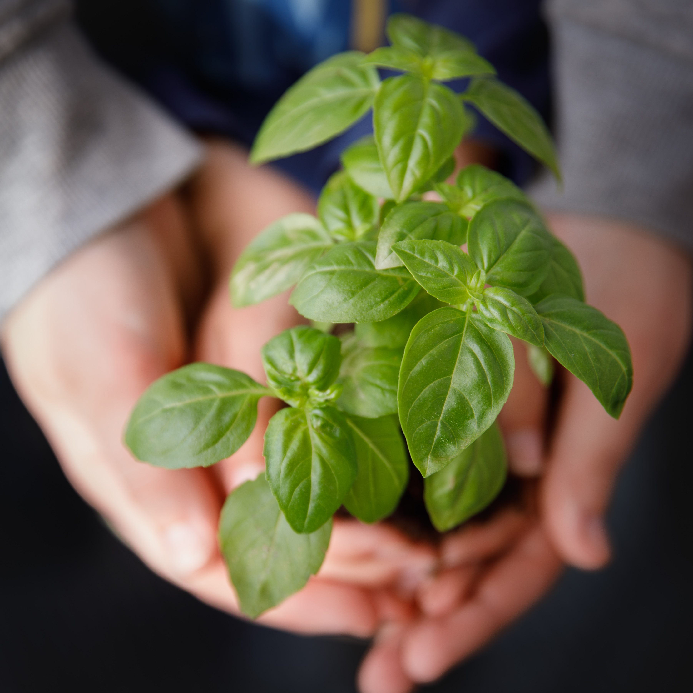

Katherine Williams
Sophomore in Greenville, South Carolina
I am a Sophomore at Bob Jones University studying Interior Architecture and Design with a minor in Photography. I work for the Classic Players in Rodeheaver Auditorium as a costume girl.
I am part of Morningside Baptist Church. My favorite website is here, and you can email me here.
I love photography and I enjoy making things, reading, doing school, and hanging out with my friends. To check out some of my photography you can check out my instagram account here
EDUCATION
Interior Architecture and DesignBob Jones University
My recent photography work: 